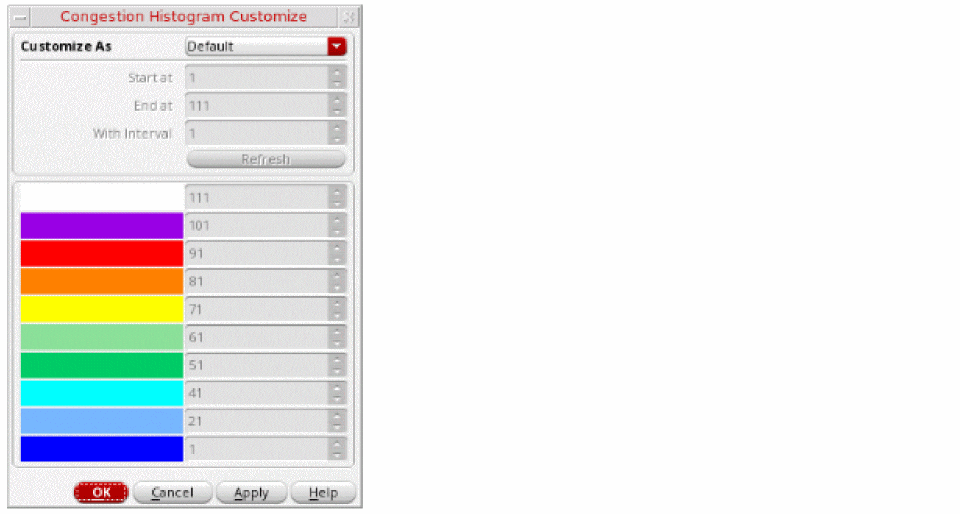

Customizing a Histogram
At times it may become necessary to customize the histogram. Let us consider a scenario when you run global routing and congestion analysis and most of the design is congested. However, there are some very small regions of high congestion. The following figure displays the histogram with small regions of high congestion.
Because there are small bands of high congestion, it is difficult to know the number of gcells that are in the 111-200% bucket compared to the ones in the 91-100% bucket. Also, it is difficult to know the number of gcells that are 95% congested compared to ones that are 98% congested.
In such a scenario, customizing the histogram will be beneficial. You can customize the histogram to only display the congested buckets and expand them to the entire histogram table. To do this:
-
Click the Congestion Histogram Customize icon on the Congestion Analysis toolbar.
The Congestion Histogram Customize form is displayed.
 - Select one of the following methods to customize the histogram: Default, Interval, Start and End, Specified. To view the results based on histogram customization, see Results Based on Histogram Customization.
- In the Start at field, specify the congestion percentage with which to start. This field is enabled only when the customization method is selected as Interval or Start and End.
- In the End at field, specify the congestion percentage on which you want to end. This field is enabled only when the customization method is selected as Start and End.
- In the With Interval field, specify the interval between the congestion buckets. This field is enabled only when the customization method is selected as Interval.
- Click Refresh. The table entries in the Congestion Histogram Customize form are updated.
- Click OK.
The congestion data displayed in the heat map, the histogram, and the global cell track utilization table is updated based on the selected customization method and the related settings.
Related Topics
Congestion Histogram Customize Form
Results Based on Histogram Customization
Return to top